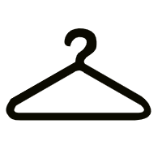

Second love
A hip store dedicated to recycled clothes. SecondLove sells beautiful, handpicked pieces from high-end brands and designers. Every item that is presented in the store has its own unique history. Here you can find the coat or hat you have always dreamt of or reinvent yourself completely.
Contact
Phone: +47 413 57 743
Adress: Østre Skostredet 2, Bergen